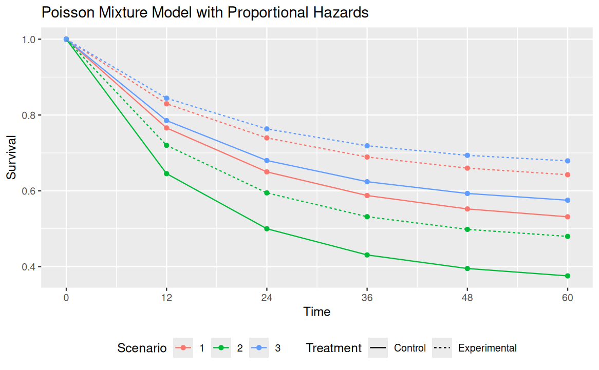
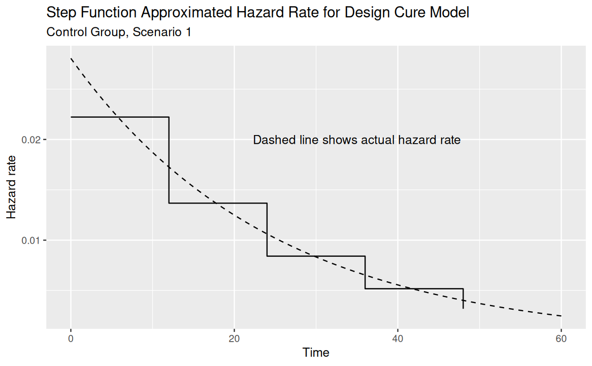
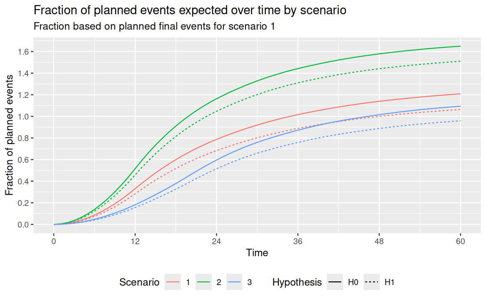

A cure model calendar-based design
Source:vignettes/PoissonMixtureModel.Rmd
PoissonMixtureModel.RmdIntroduction
We present a study design for a time-to-event outcome based on a cure model (Rodrigues et al. (2009)). In this case, it is assumed that tail behavior for the survival curve is of substantial interest and there is no desire to stop and do a final analysis before substantial follow-up through 4 years has been allowed to accrue. It is assumed further if substantial events have not accrued in this time period, then some sacrifice in power would not be unreasonable. Due to this as well as substantial variability in event accrual caused by feasible differences in event rates, we use a calendar-based design, including calendar-based spending (Lan and DeMets (1989)).
We discuss some of the potential advantages and disadvantages of the cure model and calendar-based design cases where hazard rates for events decrease substantially over time and the true underlying distributions may meaningfully deviate from what is anticipated at the time of design.
The Poisson mixture model
The Poisson mixture model is a cure model that can be useful when the failure rate in a population is expected to decline substantially over time based on historical data. It also has the property that if control group time-to-event follows a Poisson mixture distribution, then a proportional hazards assumption for treatment effect will yield another Poisson mixture distribution for the experimental group. The model is flexible and easy to use in that the control distribution is specified with two parameters in a transparent fashion: the cure rate and one other survival rate at an arbitrarily specified time point.
The Poisson mixture model (Rodrigues et al. (2009)) assumes a cure rate \(p\) to represent the patients who benefit long-term. The survival function as a function of time \(t\) for a control group (\(c\)) is:
\[S_c(t)=\exp(-\theta(1-\exp(-\lambda t))),\] where \(\theta = -\log(p)\), \(\lambda> 0\) is a constant hazard rate and \(t\ge 0\). The component \(\exp(-\lambda t)\) is an exponential survival distribution; while it could be replaced with an arbitrary survival distribution on \(t>0\) for the mixture model, the exponential model is simple, adequately flexible and easy to explain. This two-parameter model can be specified by the cure rate and the assumed survival rate \(S_c(t_1)\) at some time \(0 <t_1<\infty.\) We can solve for \(\theta\) and \(\lambda\) as follows:
\[S_c(\infty) = e^\theta \Rightarrow \theta = -\log(S_c(\infty)) \] and with a little algebra, we can solve for \(\lambda\): \[S_c(t_1)= \exp(-\theta(1-\exp(-\lambda t_1))) \Rightarrow \lambda = -\log(1 + \log(S_c(t_1)) / \theta) / t_1\] We note that under a proportional hazards assumption with hazard ratio \(\gamma > 0\) the survival function for the experimental group (e) is:
\[S_e(t)=\exp(-\theta\gamma(1-\exp(-\lambda t))).\] For any setting chosen, it is ideal to be able to cite published literature and other rationale for study assumptions and show that the Poisson mixture assumptions for the control group reasonably match historical data.
Supporting functions
We create the following functions to support examples below.
-
pPM()computes a Poisson mixture survival function -
hPM()computes Poisson mixture hazard rates
Most readers should skip reviewing this code.
# Poisson mixture survival
pPM <- function(x = 0:20, cure_rate = .5, t1 = 10, s1 = .6) {
theta <- -log(cure_rate)
lambda <- -log(1 + log(s1) / theta) / t1
return(exp(-theta * (1 - exp(-lambda * x))))
}
# Poisson mixture hazard rate
hPM <- function(x = 0:20, cure_rate = .5, t1 = 10, s1 = .6) {
theta <- -log(cure_rate)
lambda <- -log(1 + log(s1) / theta) / t1
return(theta * lambda * exp(-lambda * x))
}Scenario assumptions
We consider three scenarios to demonstrate how spending can impact potential for trial success and fully understanding treatment group differences. The following can be adjusted by the reader and the vignette re-run.
# Control group assumptions for three Poisson mixture cure models
cure_rate <- c(.5, .35, .55)
# Second time point for respective models
t1 <- c(24, 24, 24)
# Survival rate at 2nd time point for respective models
s1 <- c(.65, .5, .68)
time_unit <- "month"
# Hazard ratio for experimental versus control for respective models
hr <- c(.7, .75, .7)
# Total study duration
study_duration <- c(48, 48, 56)
# Number of bins for piecewise approximation of Poisson mixture rates
bins <- 5We will assume a constant enrollment rate for the duration of enrollment, allowing different assumed enrollment durations by scenario. The following code can be easily changed to study alternate scenarios.
Examples
The points in the following graph indicate where underlying cumulative hazard matches the piecewise exponential of the specified cure rate models by scenario. The piecewise failure model is used to derive the sample size and targeted events over time in the trial.

We also evaluate the failure rate over time for scenario 1, which is used below in the design derivation. Note that the piecewise intervals used to approximate changing hazard rates can be made arbitrarily small to get more precise approximations of the above. However, given the uncertainty of the underlying assumptions, it is not clear that this provides any advantage.

Event accumulation
Based on the above model, we predict how events will accumulate based on either the null hypothesis of no failure rate difference or the alternate hypothesis where events accrue more slowly in the experimental group. We do this by scenario. We use as a denominator the final planned events under the alternate hypothesis for scenario 1.
Now we compare event accrual under the null and alternate hypothesis for each scenario, with 100% representing the targeted final events under scenario 1. The user should not have to update the code here. For the 3 scenarios studied, event accrual is quite different, creating different spending issues. As planned, the expected targeted event fraction reaches 1 for Scenario 1 at 48 months under the alternate hypothesis. Under the null hypothesis for this scenario, expected targeted events are reached at approximately 36 months. For Scenario 2 the expectation is that targeted events will be achieved in less than 24 months under both the null and alternative hypotheses. Under Scenario 3, the expected events under the alternative do not reach the target even by 60 months.

Study design
Design assumptions
We choose calendar-based timing for analyses as well as for spending.
This is not done automatically by the gsSurv() function,
but is done using the gsSurvCalendar() function. There are
two things gsSurvCalendar() takes care of:
- How to get information fraction levels that correspond to targeted calendar analysis times to plug in for the planned design.
- Replacing information fraction levels with calendar fraction levels for \(\alpha\)- and \(\beta\)-spending. Note that calendar-based analysis timing might often be used with information-based spending in many cases. In this case, the calendar-based timing is only used as an approximation to derive information fractions at interim analyses and timing of analyses would still be based on event counts regardless of the amount of time it takes to accumulate targeted events.
We begin by specifying calendar times of analysis and find corresponding fractions of final planned events and calendar time under design assumptions. Having the first interim at 14 months rather than 12 was selected to get the expected events well above 100.
# Calendar time from start of randomization until each analysis time
calendarTime <- c(14, 24, 36, 48)Now we move on to other design assumptions.
# Get hazard rate info for Scenario 1 control group
control <- hazard |> filter(Scenario == 1, Treatment == "Control")
# Failure rates
lambdaC <- control$hazard_rate
# Interval durations
S <- (control$Time - control$time_lagged)[1:(bins - 1)]
# 1-sided Type I error
alpha <- 0.025
# Type II error (1 - power)
beta <- .1
# Test type 6: asymmetric 2-sided design, non-binding futility bound
test.type <- 6
# 1-sided Type I error used for safety (for asymmetric 2-sided design)
astar <- .2
# Spending functions (sfu, sfl) and parameters (sfupar, sflpar)
sfu <- sfHSD
sfupar <- -3
sfl <- sfLDPocock # Near-equal Z-values for each analysis
sflpar <- NULL # Not needed for Pocock spending
# Dropout rate (exponential parameter per unit of time)
dropout_rate <- 0.002
# Experimental / control randomization ratio
ratio <- 1Study design and event accumulation
We now assume a trial is enrolled with a constant enrollment rate over 12 months trial duration of 48. As noted above, the event accumulation pattern is highly sensitive to the assumptions of the design. That is, deviations from plan in accrual, the hazard ratio overall or over time as well as relatively minor deviations from the cure model assumption could substantially change the calendar time of event-based analysis timing. Thus, calendar-based timing and spending (Lan and DeMets (1989)) may have some appeal to make the timing of analyses more predictable. The main risk to this would likely be under-accumulation of the final targeted events for the trial. The targeted 4-year window may be considered clinically important as well as an important limitation for trial duration. Using the above predicted information fractions at 12, 24, 36, and 48 months to plan a calendar-based design. Calendar-based spending is likely to give more conservative interim bounds since the calendar fractions are lower than the information fractions in the text overlay of the plot after the first interim: 10%, 20%, 40%, 60%, 80% and 100%, respectively.
We now set up a calendar-based design.
design_calendar <-
gsSurvCalendar(
calendarTime = calendarTime,
spending = "calendar",
alpha = alpha,
beta = beta,
astar = astar,
test.type = test.type,
hr = hr[1],
R = enroll_duration[1],
gamma = 1,
minfup = study_duration[1] - enroll_duration[1],
ratio = ratio,
sfu = sfu,
sfupar = sfupar,
sfl = sfl,
sflpar = sflpar,
lambdaC = lambdaC,
S = S
)
design_calendar |>
gsBoundSummary(exclude = c("B-value", "CP", "CP H1", "PP")) |>
lt() |>
lt_header(
title = "Calendar-Based Design",
subtitle = "Calendar Spending"
)Considerations
There are a few things to note for the above design:
- The futility bounds are advisory only. In particular, the late futility bounds may be ignored since the follow-up for the full time period may merit continuing the trial.
- The efficacy spending function should be carefully considered to ensure the evidence required to cross any bound is likely to justify early stopping with a definitive demonstration of benefit.
- Substantial deviations in event accumulation would not change timing of analyses from their calendar times. This should be considered for acceptability at the time of design.
- The trial may be continued after crossing an efficacy bound for further follow-up as it is unlikely that control patients doing well would cross over to experimental therapy in absence of adverse clinical outcomes. Inference at subsequent analyses using repeated \(p\)-values (Jennison and Turnbull (2000)) or sequential \(p\)-values (Liu and Anderson (2008)) are well-specified and interpretable as adjusted \(p\)-values.